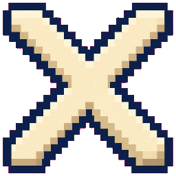

CATEGORY
WORK
Deep work, meetings, admin, deadlines — the effort that usually vanishes at 6 p.m. Log it here so a workday still counts after you close the laptop.
Questify turns work, growth, and health into quests.
You do the thing in real life. The page keeps score.
Most effort disappears at the end of the day. Meetings, pages, walks — they happened, then they vanished. This site names the work you already do so you can see it add up.
Deep work, meetings, admin, deadlines — the effort that usually vanishes at 6 p.m. Log it here so a workday still counts after you close the laptop.
Courses, reading, practice, side projects — growth that compounds but is hard to feel day to day. Name the page or the module so the bar can move.
Workouts, walks, sleep, recovery — habits that matter most when they stay consistent. A short walk is still a quest if you mark it done.
Name it. Pick Work, Growth, or Health. Give it XP.
The site does not watch you. You go do the thing.
One click. That is the whole ritual.
The bar fills. At 2,000 the level ticks. That is all.

No partiesA single-player log, not a guild and not a leaderboard.
Milestone 1 is a static site. Nothing here is for sale.
A broken streak is a number, not a lecture.
Not a grade. Not a salary. Not a public score. Just a count of work you already did.
Five people. One site. No extra mascots.